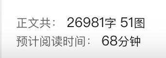

大家好，我是小林。
前段时间发的图解 RAG 的文章，当时评论收到了很多同学的好评，很多同学说是他看过最通俗易懂的 RAG 文章。

评论区还有也有同学在催更，让我讲讲 GraphRAG 和 LightRAG。

那么，今天这篇就是来还债的。
上一篇讲的是「传统 RAG」（也叫 Naive RAG），核心思路是：把文档切成块（Chunk）→ 做向量化（Embedding）→ 存入向量数据库 → 查询时基于语义相似度检索 Top-K 个文本块 → 塞给大模型生成答案。

这套流程很经典，也解决了大模型「闭卷考试」的难题。
但这套方案在实际企业场景落地的时候，会撞上几堵很硬的墙。GraphRAG 和 LightRAG 就是为了绕过这几堵墙而出现的。

所以，这篇讲重点介绍下面这些内容，而且也都是我从大厂面经中收集到的面试题：
🌟传统 RAG 有什么痛点？ 🌟什么是 GraphRAG？为什么会有 GraphRAG？ 🌟GraphRAG 的工作流程是怎样的？ GraphRAG 的难点是什么？ 🌟GraphRAG 如何应对增量场景？ 🌟什么是 LightRAG？为什么会有 LightRAG？ 🌟LightRAG 的工作原理是怎样的？ 🌟LightRAG 和 GraphRAG 有什么区别？ 什么场景下需要 GraphRAG？ 什么场景下需要 LightRAG？
整篇文章读完，你就能搞懂这两个当前最火的 RAG 进阶技术，也能知道自己的业务场景到底该选哪个。
废话不多说，直接开讲。

1、传统 RAG 有什么痛点？
要理解 GraphRAG 为什么会出现，咱们得先搞清楚一个问题：传统 RAG 到底哪里不行？
很多同学读完上一篇 RAG 文章，可能会觉得：RAG 不是挺好的吗？能让大模型有「外挂知识库」，能减少幻觉，能回答私有数据的问题……听起来已经很够用了。
但问题是，「够用」和「能打」是两码事。你在 Demo 场景下跑一跑，确实没什么问题，但一旦真正拿到企业的复杂场景去用，你会发现传统 RAG 经常「表现得体面，但答得不对」。
下面我就用几个真实场景，带你感受一下传统 RAG 会卡在哪里。
痛点一：跨文档的「多跳推理」干不了
咱们先来看一个真实的业务场景。
假设你在一家跨国公司做风控，你问 RAG 系统这样一个问题：
「我们公司哪些欧洲供应商，在过去一年的安全审计中没通过，而且还在处理个人隐私数据（PII）？」
这个问题要想答对，得同时拿到三份文档里的信息：供应商档案（说明哪些供应商是欧洲的）、审计报告（说明哪些供应商没通过审计）、合同文档（说明哪些供应商在处理 PII 数据）。
但传统 RAG 干不了这件事。为什么？
因为传统 RAG 的检索逻辑是「找语义最相近的 Top-K 个文本块」。你问这个问题，它可能分别检索到：一些提到「欧洲供应商」的文本块、一些提到「安全审计」的文本块、一些提到「PII 处理」的文本块。
但它没有任何机制把这三个集合做「交集」。它只能把这些文本块一股脑扔给大模型，然后大模型自己也懵：我该怎么把这几份互相独立的资料关联起来？
这种需要「A 关联到 B，B 关联到 C，然后从 A 推到 C」的问题，就叫多跳推理（Multi-hop Reasoning）。传统 RAG 在这种场景下经常翻车，给出的答案要么不完整，要么干脆瞎编。

还有一个经典的例子，问「爱因斯坦的导师的导师是谁？」。这个问题得先找到「爱因斯坦的导师是谁」，然后再找到「那个导师的导师是谁」。
信息是分散在多个文档里的，传统 RAG 一次性检索根本搞不定这种链式推理。
痛点二：全局性问题，它根本答不上
传统 RAG 的第二个硬伤，是答不了「全局性问题」。
什么叫全局性问题？我举几个例子你就有感觉了。
比如你问「这本小说的主题思想是什么？」、「这份年度财报里，公司战略发生了哪些变化？」、「这个技术文档集合里，主要讨论的是哪几类方向？」这些问题有一个共同的特点：答案不在某一个文本块里，而是需要你通读所有文档、归纳总结才能得出来。
但传统 RAG 的本质是「检索」，它只会找 Top-K 个最像你问题的文本块。可你想问的是「主题思想」，哪个文本块会写「本书主题思想是 XXX」？几乎没有。所以它检索出来的 Top-K 个文本块，大概率只是一些零散的片段，大模型拿到这些片段根本没法总结出整体主题。
这个问题在微软 GraphRAG 的论文里，被叫做 Query-Focused Summarization（查询聚焦的摘要）问题，本质上不是一个「检索」任务，而是一个「全局归纳」任务。传统 RAG 的 Top-K 检索机制，天生就处理不了这种需求。
你想想，如果你在医院里问医生「过去一年咱们科室主要治疗的是哪几类病？」，医生要给出答案，得在脑子里把过去一年所有病例都过一遍、归归类。他不能只翻最上面的几份病例就告诉你答案吧？传统 RAG 干的就是这种「只翻最上面几份」的事情。

痛点三：切块带来的「语义断裂」
传统 RAG 的第三个痛点，藏在我们经常忽略的细节里：文档切块（Chunking）本身就在毁坏语义。
你想啊，传统 RAG 第一步就是把文档切成 500 字或者 1000 字的文本块。这种切法看起来没问题，但实际上会带来三个麻烦：
第一个麻烦，是「语义被切断了」。
一段完整的论述可能横跨了三个段落，你按字符数切，就可能把一个完整的观点拦腰斩开。检索时只召回了上半段，下半段没召回，答案自然就不完整。
第二个麻烦，是「实体之间的关系丢了」。
举个医疗场景的例子：原文里写的是「卡托普利属于 ACEI 类药物，但严重肾功能不全者禁用」。切块之后，「卡托普利是 ACEI 药物」可能在一个块里，「严重肾功能不全者禁用」可能在另一个块里。
这时候你问「高血压合并糖尿病患者首选哪几种 ACEI 药物？禁忌症是什么？」，传统 RAG 把这两个块都检索出来扔给大模型，大模型一看：诶，这里提到卡托普利，那里提到禁用……然后就可能给你来一句「卡托普利属于禁忌症药物」。
你看，因果关系被切块这一步给毁了。大模型拿到的是一堆「碎片化的事实」，但事实和事实之间原本的逻辑链条，没了。
第三个麻烦，是「检索噪声」。
因为切块之后每个块都是独立的，语义相似的块不一定就是你真正想要的块。比如你问「苹果的营收」，可能会检索到一堆讨论「苹果」（水果）的文本块，因为它们在语义上都很接近「苹果」这个词。这种噪声进来之后，大模型就容易被误导。
一张表总结传统 RAG 的三大痛点
把上面讲的三大痛点汇总一下：

痛点背后的根本原因：它不「理解关系」
你如果仔细琢磨上面这三个痛点，会发现它们背后其实是同一个根本问题：
传统 RAG 做的是「找相似文本」，但企业真正需要的是「理解实体关系」。
向量检索这种方式，在「找长得像的句子」这件事上是很强的。但它没有机制去理解「这两个实体之间是什么关系」「这条信息和那条信息之间有没有因果链」。
所以，如果你的业务场景只是「找到某条具体事实」（比如问「我们公司年假有多少天」），传统 RAG 完全够用。但只要问题一旦涉及关系、推理、全局归纳，传统 RAG 就开始力不从心了。
那问题来了，怎么让 RAG 真正「理解关系」呢？
答案就是：引入知识图谱。这也正是 GraphRAG 的核心思路。
我们下一节就来聊聊，GraphRAG 到底是怎么把「找相似文本」升级成「理解关系」的。

2、什么是 GraphRAG？为什么会有 GraphRAG？
先搞清楚 GraphRAG 到底是什么
GraphRAG 这个词，其实有两层含义。
狭义上，它指的是微软研究院在 2024 年 4 月发布的那篇论文和配套的开源项目。论文名字叫 《From Local to Global: A Graph RAG Approach to Query-Focused Summarization》（从局部到全局：一种面向查询聚焦摘要的图 RAG 方法），作者是 Darren Edge、Ha Trinh 等人。
广义上，它指的是所有基于知识图谱做 RAG 的方法，业界还有很多变种（比如 NebulaGraph、HippoRAG、阿里云的 AnalyticDB GraphRAG 等）。
咱们这篇文章主要讲的是微软这套 GraphRAG，因为它目前影响力最大，开源社区也最活跃，几乎是所有 GraphRAG 方案的参照对象。后面如果没特别说明，我说的 GraphRAG 都指微软这一套。
好，定义说清楚了，那 GraphRAG 到底在干嘛？
一句话概括：GraphRAG 就是用 LLM 把文档「读成一张知识图谱」，然后基于这张图谱来做检索和回答。

传统 RAG 和 GraphRAG 的核心差异是什么？
你如果把传统 RAG 和 GraphRAG 放一起对比，会发现它们的关键分歧就在于：知识是以什么形式存储的。
传统 RAG：知识以离散的文本块形式存储。每个文本块都是独立的，块和块之间没有任何联系。 GraphRAG：知识以图（Graph） 的形式存储。文档里的人、地、物、概念（这些是「实体/节点」），以及它们之间的关系（这些是「边」），都被显式地提取出来，形成一张结构化的关系网络。
我举个更具体的例子你就懂了。
假如你有一段文本：「张三在 2025 年创立了 A 公司，李四是 A 公司的 CTO，A 公司主要做自动驾驶业务。」
传统 RAG 会把这段话整体变成一个文本块，存到向量数据库里。你下次问「A 公司的 CTO 是谁？」，它靠语义相似度检索回这段话，然后让大模型去阅读理解，答出「李四」。
GraphRAG 则会从这段话里抽取出实体和关系，变成这样的结构化数据：

你看出差别了吗？GraphRAG 里的知识不是「一段话」，而是一张「关系网」。这张关系网里，每个节点是谁、每条边是什么关系，都是明确的、可追溯的。

为什么要搞成图？这么做到底好在哪？
你可能会问：费这么大劲把文档变成图，这么做到底有什么好处？
其实就是为了解决咱们在第 1 章讲的那三个痛点。咱们一个一个来看。

第一，多跳推理变得天然可行。
上一节咱们提到那个「欧洲供应商 + 审计没过 + 处理 PII 数据」的查询，传统 RAG 干不了，是因为它没法做「交集」。但在图上，这件事就变成了图遍历（Graph Traversal）：从「欧洲」这个节点出发，找它连着的所有「供应商」节点，再筛选出那些连着「审计未通过」的，再筛选出那些连着「PII 数据处理」的。
图天然就擅长做这种「顺藤摸瓜」的事。这也是 GraphRAG 在多跳问答任务上（比如 HotpotQA 数据集）比传统 RAG 的 F1 分数高 5% 以上的根本原因。
第二，全局性问题能答了。
这是 GraphRAG 最核心的创新点，也是那篇论文标题里「From Local to Global」（从局部到全局）的来源。
微软的做法很巧妙：先把整张知识图谱通过社区检测算法（比如 Leiden 算法）划分成若干个「社区」，再用 LLM 为每个社区生成一份摘要。
什么叫社区？你可以把它理解成图里那些互相抱团、关系特别密切的一群节点。比如在《三国演义》这本书里，刘关张就是一个小社区、曹操集团是一个社区、诸葛亮周边的人物又是一个社区。每个社区内部的人物关系非常紧密，但社区之间的连接就比较稀疏。
一旦每个社区都有了摘要，你问「整本书主要讲了几路诸侯的斗争？」这种全局性问题时，GraphRAG 就可以把各个社区摘要拿出来归纳一下，给你一个完整的答案。传统 RAG 没有这种「全局视角」，自然就答不出来。
第三，实体和关系显式化，切块语义断裂的问题也缓解了。
因为 GraphRAG 已经提前把文档里的实体和关系抽出来了，哪怕原文里「卡托普利属于 ACEI」和「严重肾功能不全者禁用」分散在两个地方，它们在图上也能通过「卡托普利」这个节点连起来。检索时不会丢掉因果关系，大模型也就不容易混淆了。
一个更形象的类比：从「图书馆找书」到「带导游游书店」
讲到这儿，你可能已经有感觉了，但咱们再用一个生活化的类比来强化一下理解。

传统 RAG 像什么？像你去一个没有任何分类的图书馆找书。所有书都按出版日期顺序摆在一起，你想找「和气候变化有关的书」，只能靠关键字搜索，一本一本翻，找到几本就交给你。你想问「这个图书馆最近这几年主要收藏的是哪几个方向的书？」对不起，没人能回答你。
GraphRAG 像什么？像你进了一个带导游的主题书店。导游在你进门前已经把所有书按主题分好类了，每个主题区还贴了一张「这个主题区主要讨论什么」的概览海报。你要查具体的细节，导游带你精准定位；你要问宏观的主题，导游就把所有主题概览海报念给你听。
你说这两种体验能一样吗？
GraphRAG 的诞生背景
最后聊聊 GraphRAG 为什么在 2024 年这个时间点被提出。
其实「知识图谱」这个东西并不新鲜，早在 2012 年谷歌就提出过 Knowledge Graph 的概念。把知识图谱和 RAG 结合的想法也有人尝试过，但之前都不温不火，为什么？
因为之前构建知识图谱太痛苦了。传统的知识图谱构建，要么靠人工标注（超级贵），要么靠专门训练的 NLP 模型（效果一般）。提取实体、关系、消歧、对齐……每一步都是技术壁垒。
而大模型时代，这些事情全都可以交给 LLM 来做了。你写几个提示词（Prompt），LLM 就能从一段文本里把实体、关系、属性都抽出来，效果还不错。这就让「从文档自动构建知识图谱」这件事从「需要专门团队做半年」降到了「写个 Pipeline 跑几个小时」。
这也是 GraphRAG 能在 2024 年一下火起来的根本原因：不是思路新，而是 LLM 让这个思路变得可实现了。
好，到这儿你应该对 GraphRAG 是什么、为什么会有它，有了一个整体的认识。但你可能还有疑问：它具体是怎么工作的？实体怎么抽？社区怎么划？查询怎么做？
下一章，我们就来拆解 GraphRAG 的完整工作流程。
3、GraphRAG 的工作流程是怎样的？
搞清楚了 GraphRAG 是什么，咱们这一节就来拆解它到底是怎么工作的。
和传统 RAG 一样，GraphRAG 也分成两个大阶段：索引阶段（Indexing，离线） 和 查询阶段（Query，在线）。

索引阶段做的事情：把原始文档变成一张带有社区摘要的知识图谱。这个阶段很重，需要 LLM 大量调用，通常离线跑一次就行。
查询阶段做的事情：用户提问时，基于这张图谱快速检索出相关信息，喂给 LLM 生成答案。
咱们一个一个阶段来看。
索引阶段：5 步把文档变成知识图谱
微软 GraphRAG 的索引阶段，可以拆成 5 个核心步骤。咱们用一个具体的例子来理解整个过程，比如说你有一本《三国演义》的电子书，要把它喂进 GraphRAG。
第 1 步：文档切块（Text Chunking）
这一步和传统 RAG 完全一样。把一整本书按一定的字符数（比如 1200 字）切成一个个文本块（GraphRAG 里叫 Text Unit）。
为什么还要切块？因为 LLM 的上下文窗口有限，你没法把 50 万字的《三国演义》一次性塞给它。切成小块之后，后面的实体抽取就可以并发地对每个块单独处理。
第 2 步：实体与关系提取（Entity & Relationship Extraction）
这一步是 GraphRAG 的第一个核心创新点。每个文本块都会单独发给 LLM，让它从里面把实体（Entity） 和关系（Relationship） 抽出来。
GraphRAG 用的是一个专门设计的 Prompt，大致长这样（简化版）：
你是一个实体关系抽取助手。请从下面的文本中：
1. 识别所有的实体，每个实体给出：
- entity_name：实体名（大写）
- entity_type：类型（比如 [人物, 组织, 地点, 事件]）
- entity_description：实体的综合描述
2. 识别所有实体之间的关系，每对关系给出：
- source_entity：源实体
- target_entity：目标实体
- relationship_description：关系的描述
- relationship_strength：关系强度（1-10 的数字）
文本内容：
{input_text}
请按以下格式输出：
("entity"|实体名|类型|描述)
("relationship"|源|目标|描述|强度)
LLM 读完一段「刘备和关羽、张飞在桃园结义」的文本，会输出类似这样的结构化内容：
("entity"|刘备|人物|蜀汉的建立者，三国时期重要人物)
("entity"|关羽|人物|刘备的义弟，以忠义闻名)
("entity"|张飞|人物|刘备的义弟，勇猛善战)
("relationship"|刘备|关羽|桃园结义为兄弟，关系极为紧密|10)
("relationship"|刘备|张飞|桃园结义为兄弟，关系极为紧密|10)
("relationship"|关羽|张飞|桃园结义为兄弟|10)
这一步跑完，所有文本块都会产出一堆实体节点和关系边。
但注意，这里会有一个麻烦：重复和歧义。比如刘备可能在文本里被叫做「玄德」「先主」「刘皇叔」，LLM 抽取的时候可能把它们抽成了三个不同的实体。这个问题 GraphRAG 后面会通过「实体合并」和「社区检测」来一定程度上缓解，但不能完全解决。这也是我们第 4 章要讲的难点之一。

第 3 步：生成实体/关系摘要（Summarization）
这一步容易被忽略，但其实很关键。
同一个实体（比如「刘备」）会在好多个文本块里被反复抽取，每次抽取的描述可能都不一样：「蜀汉的建立者」「关羽的义兄」「汉室宗亲」……
GraphRAG 会把同一个实体在所有文本块里的描述汇总起来，让 LLM 合成一段更完整的实体描述。关系也是同样的处理。
这一步做完，每个实体节点就有了一段「综合描述」，这段描述会被向量化后存入向量数据库，供后面的 Local Search 用。
第 4 步：社区检测（Community Detection）
到这一步，你手里已经有了一张完整的知识图谱，里面的节点是实体，边是关系。但这张图可能有成千上万个节点，怎么组织？
GraphRAG 用的是Leiden 算法（读作「莱顿」），这是一种层次化社区检测算法，比常见的 Louvain 算法更稳定一些。
Leiden 算法会把图谱划分成多个层级的社区，这是它最有意思的地方。

咱们还是拿《三国演义》来说。
最粗的那一层（叫 Level 0）可能把整张图划成五到十个大社区，比如「曹魏集团」「蜀汉集团」「东吴集团」「黄巾起义相关」这种； 再往下一层（Level 1），每个大社区又会被拆得更细，比如「蜀汉集团」里会分出「刘关张小团体」「诸葛亮周边」「五虎上将」等等； 再继续往下 Level 2、Level 3，一路细分下去，直到社区没法再拆为止。
这种层次化的划分，就是 GraphRAG 后面能处理「不同粒度全局问题」的基础。用户问得越宏观，就用越高层的社区；问得越具体，就用越低层的社区。
第 5 步：生成社区摘要（Community Reports）
社区划分完之后，GraphRAG 会为每一个社区单独生成一份摘要报告（叫 Community Report）。

这一步也是靠 LLM 来做。GraphRAG 会把一个社区内部的所有实体、关系、还有可选的 claim 一股脑儿都喂给 LLM，让它写一份总结报告。这份报告里一般会写清楚这个社区讨论的主题是什么、里面最重要的实体和关系有哪些、有哪些关键发现，以及这个社区在整个数据集里的影响力评分。
这些社区报告就是 GraphRAG 回答全局性问题的核心资产。你可以把它们理解成图书馆里每个主题区前面贴的那张「本主题概览海报」。
索引阶段到这里就结束了。可以看到，这个过程对 LLM 的调用量是非常大的：每个文本块要调一次做实体抽取，每个实体/关系要调一次做摘要合成，每个社区要调一次做报告生成。一本 100 万 token 的书，索引一次可能要几千甚至上万次 LLM 调用，成本不便宜。这也是后面我们会讲到的痛点之一。
查询阶段：两种搜索模式各司其职
索引跑完之后，图谱就建好了，你有一整套实体节点 + 关系边 + 层次化社区 + 社区报告。真正用起来的时候，GraphRAG 提供了两种查询模式：Local Search 和 Global Search。
（补充：后来 GraphRAG 官方还推出了第三种叫 DRIFT Search 的模式，相当于 Local 和 Global 的混合版，咱们不展开讲，感兴趣的同学可以看官方文档。）
模式一：Local Search（本地搜索）
适用场景：用户问的是关于某个具体实体的问题。比如「诸葛亮都有哪些著名的计策？」「A 公司的 CTO 是谁？」。
工作流程：
定位入口实体：先用问题的向量，在所有实体节点的向量索引里做相似度搜索，找到最相关的几个实体。比如问诸葛亮，就先定位到「诸葛亮」这个节点
顺藤摸瓜扩展：从入口实体出发，沿着图的边扩展，找到相关的邻居实体、关系、原始文本块、所属社区报告
组装上下文：把找到的这些信息整合成一段上下文（Context）
交给 LLM 生成答案
你看，Local Search 的核心是「从一个点扩散到它的邻居」，很适合回答那些「围绕某个具体对象」的问题。

模式二：Global Search（全局搜索）
适用场景：用户问的是全局性、宏观性的问题。比如「整本书讲了哪几派势力的斗争？」「这份报告的主要结论是什么？」。
工作流程：GraphRAG 这里用的是一个Map-Reduce的策略：
Map 阶段：把某个层级（比如 Level 1）的所有社区报告都拿出来，分成好多批，对每一批都让 LLM 生成一个「中间答案」，并给每个观点打一个「重要性评分」 Reduce 阶段：把所有中间答案里的观点汇总，按评分排序，保留最重要的那些，最后让 LLM 合并成一个完整的最终答案
这个流程听起来有点绕，但它的本质是：把全局性问题拆分成多个社区内部的子问题并行解答，最后再汇总。
打个比方，你问班长「咱们班这学期整体学习情况怎么样？」，班长不会去看每个同学的每张考卷，而是会先找每个小组的组长，让他们每人给一份自己组的总结，然后班长再把所有组的总结汇到一块儿给你看。GraphRAG 的 Global Search 干的就是这事儿。
为什么 Global Search 特别费钱？
你仔细想想就知道了：Map 阶段要遍历所有相关社区的报告。如果层级选得低（比如 Level 2），可能涉及几百上千个社区，每个都要调一次 LLM 生成中间答案。一次全局查询可能就要消耗上万 token。
这也是微软后来推出「动态社区选择」（Dynamic Community Selection）优化的原因：从根节点开始，只深入那些和问题相关的社区，跳过无关的子树，能大幅减少 LLM 调用次数。根据微软官方数据，这种优化能把平均参与计算的社区数从 1500 个降到 470 个左右。
一张图总结 GraphRAG 的完整工作流程
最后咱们把整个流程串起来：

索引阶段（离线，一次性跑完）：

查询阶段（在线，每次查询都跑）：

到这儿你应该已经把 GraphRAG 的整个流程搞清楚了。但你可能也注意到一个问题：这套方案虽然强大，但步骤多、调用贵、流程复杂。
GraphRAG 在实际落地的时候，到底会撞上哪些坑？下一节咱们来盘一盘。
4、GraphRAG 的难点是什么？
读到这儿，你可能会觉得 GraphRAG 好像挺完美的，能解决传统 RAG 的痛点，又有清晰的流程。
但这里我得给你泼一盆冷水。
GraphRAG 虽然效果好，但它是一个「昂贵的妥协」。在真正的生产环境里，你会发现它有一堆让人头大的坑。这也是为什么很多团队兴冲冲地上 GraphRAG，试了几个月之后又默默退回到传统 RAG。
这一节咱们就把 GraphRAG 落地时常见的四大难点盘一盘。搞懂这些难点，你也就能理解为什么后来会出现 LightRAG 这种「轻量化改良方案」。
难点一：索引成本高得吓人（Token 焚烧炉）
GraphRAG 第一个也是最让人肉疼的难点，就是构建成本。
传统 RAG 的索引过程其实挺便宜的：切片 → 过一下 Embedding 模型 → 存进向量库。Embedding 模型的定价很低，每百万 token 也就几毛钱，整个过程几乎可以忽略成本。
但 GraphRAG 的索引过程，简直就是一台 Token 焚烧炉。

你想想，它每一步几乎都在调 LLM。每个文本块要调 LLM 来抽实体和关系，抽完之后每个实体和关系还要再调 LLM 合成一段综合描述，然后每个社区又要调 LLM 生成一份社区报告，要是你还开了 claim 抽取，那又是一轮 LLM 调用来提取各种断言。
你把这些加起来就会发现，整个过程等于把所有原文通过 LLM 反复读了好几遍，token 消耗轻轻松松就是原文的十倍甚至几十倍。
具体花多少钱呢？有研究机构做过测算：
 | ||
 | ||
 |
对比一下：同样 100 万 token，传统 RAG 的索引成本只要几美分，GraphRAG 要几十美元，差了三四个数量级。
这还不算最夸张的。有一份 arXiv 上的研究估算，给一份 5GB 的法律文档建 GraphRAG 索引，成本可能高达 3.3 万美元。对于大部分团队来说，这个数字基本就意味着「不能玩」。
这也是为什么微软自己在 2025 年推出了 LazyGraphRAG，一个不在索引阶段做实体摘要和社区报告、改成查询时动态生成的版本，成本只有原版的 0.1%。
难点二：实体消歧，踩过的人都知道多痛
GraphRAG 第二个难点，也是很多人没踩坑之前意识不到的杀手级问题，就是实体消歧（Entity Disambiguation）。
什么叫实体消歧？我举几个例子你就明白了。
你看「IBM」「国际商业机器」「IBM Corp.」「Big Blue」，这四个名字其实指的都是同一家公司，人一看就知道；但机器不知道。再比如「苹果」「苹果公司」「Apple」「Apple Inc.」，前三个在不同语境下既可能指水果也可能指公司，你得结合上下文去判断。还有一些场景更麻烦，比如「张三」这个名字，在几百篇文档里可能对应的根本就不是同一个人。
而 LLM 做实体抽取，天然就是不一致的。同一个实体在不同文档里被叫做不同名字，LLM 抽取出来之后，就变成了好几个独立的节点。
这种情况下会发生什么？
第一，你的知识图谱会被「近重复节点」塞满。一张本该只有一万个节点的图，可能出现好几万个节点，其中一堆是同一个实体的不同化名。 第二，关系会碎片化。假设有 100 份合同涉及 IBM，其中 60 份用「IBM」，40 份用「国际商业机器」。你查「IBM 的合同」，系统只会返回那 60 份。另外 40 份被挂在了另一个节点下，根本查不出来。 第三，错误会指数级放大。实体抽错一个，和它相连的所有关系都跟着错，下游社区检测也跟着错，最后生成的社区报告就跟原文对不上了。
这个问题有多难？难到业界没有标准解法。
生产环境通常会叠加好几层策略：字符串编辑距离（处理拼写差异）、向量相似度（处理语义相似）、LLM 判别合并（处理复杂情况）、甚至还要人工兜底。但每一层都会增加索引成本和延迟。
有位资深工程师说过一句话我觉得特别扎心：「实体碎片化的知识图谱，比没有知识图谱更糟糕，因为它制造了一种虚假的完整感」。你以为图已经建好了，实际上里面全是断裂的关系，但你从外面根本看不出来。

难点三：查询延迟，尤其是 Global Search
GraphRAG 的第三个难点，是查询延迟。
传统 RAG 的查询有多快？向量数据库的 ANN（近似最近邻）搜索通常毫秒级返回，整个端到端的问答可能也就一两秒。
GraphRAG 就完全不是一个级别了。
Local Search 还好，定位入口实体 + 图遍历扩展 + 上下文组装 + LLM 生成，整体大概几秒钟，勉强能接受。
但 Global Search 就是个慢性子。因为它本质是一个 Map-Reduce 过程：先是 Map 阶段，把某个层级下所有相关的社区报告拿出来，分批塞给 LLM 让它生成中间答案，要是层级选得低一点，可能涉及几百上千个社区，这就意味着要并行发起几百上千次 LLM 调用；然后是 Reduce 阶段，再让 LLM 把所有中间答案汇总成一个最终回答。
你这么一看就懂了，这种「先扇出再汇聚」的结构，一次 Global Search 的端到端延迟，经常在 10 秒到 1 分钟之间。这种响应速度，做离线分析还行，做 C 端实时交互？完全不可能。
你想啊，你问一个 ChatGPT，要等一分钟才出答案，谁能忍？
微软后来也意识到这个问题，推出了动态社区选择（Dynamic Community Selection）的优化，从根节点逐层下钻，只展开相关的社区，能把平均社区数从 1500 降到 470 左右。但再优化，Global Search 也还是比向量检索慢一个数量级。
难点四：增量更新，牵一发而动全身
这是 GraphRAG 最要命的一个难点，我单独放在下一节展开讲。
先给你一个直观感受：在传统 RAG 里，新增一份文档，就是把它切片、向量化、upsert 进向量库，完事。
但在 GraphRAG 里，事情就没那么简单了。一份新文档进来，里面可能会冒出一个实体，它其实和图里已有的某个老节点是同一个东西，但名字不一样，于是实体消歧问题又来了。再比如新文档里抽出一堆关系，这些关系一加进图，原来的社区划分就可能过时了；社区一变，你之前花大价钱让 LLM 生成的那些社区摘要就全部跟着失效；等摘要重建完，整张图的向量索引还得跟着同步更新一遍。
这种「数据互联性」带来的牵一发而动全身，让 GraphRAG 在动态场景下几乎无法高效维护。很多团队的实际做法就是「定期全量重建」，但这又把成本问题放大了。
增量更新的具体难在哪、业界有哪些应对方案，咱们下一章专门聊。
小结：GraphRAG 是「昂贵的妥协」
咱们把 GraphRAG 的四大难点汇总一下：

看到这儿你应该理解了，GraphRAG 不是银弹，它是一个「在特定场景下不得不接受的昂贵妥协」。
如果你的业务对成本敏感、对实时性要求高、数据还需要频繁更新，那原生的 GraphRAG 可能并不适合你。这也正是后面 LightRAG 这类「轻量化方案」的价值所在，它们在精度上做一些妥协，换来更低的成本和更好的增量支持。
下一节，咱们就聚焦 GraphRAG 四大难点中最棘手的那个：增量更新。看看业界是怎么应对的。
5、GraphRAG 如何应对增量场景？
这一节咱们单独拎出来讲增量更新，因为这是 GraphRAG 落地的时候最容易被低估、也是最让人头大的问题。
为什么增量更新对 GraphRAG 来说这么难？
在传统 RAG 里，你加一份新文档是什么流程？
超简单：把新文档切片 → 向量化 → upsert 到向量库，完事。整个过程几分钟搞定，几乎零副作用。
在 GraphRAG 里，加一份新文档是什么流程？
完全不一样。因为 GraphRAG 的知识是以图的形式组织的，数据和数据之间有复杂的连接关系，一份新文档进来，可能会触发一串级联效应：
第一步的麻烦，新文档里的实体可能和现有图谱里的实体需要合并。
比如老图谱里已经有了「IBM」这个节点，新文档里抽出来的叫「国际商业机器」。你需要识别出它们是同一个实体，然后合并。这就是增量版本的实体消歧问题，不仅要做一次性消歧，还要在每次增量时都做一遍。
第二步的麻烦，新的实体和关系会改变图的结构。
图结构变了，意味着什么？原来的社区划分可能过时了。可能新加入的一堆实体本应该属于某个新社区，或者老社区的边界发生了变化。
第三步的麻烦，社区一变，下游的社区摘要就全失效了。
你之前花了大价钱让 LLM 给每个社区生成的那些社区报告，现在可能和实际的图结构对不上了。要不要重新生成？重新生成就意味着又一次 Token 焚烧。
第四步的麻烦，向量索引也要同步更新。
新的实体、关系、社区摘要都要重新向量化，存进向量库。
你看，传统 RAG 里一步就能搞定的事情，在 GraphRAG 里变成了一连串「牵一发而动全身」的级联操作。

有研究数据可以佐证这个难点：一项 2025 年的研究显示，在需要时间敏感的查询上（也就是需要最新数据的场景），GraphRAG 的准确率比传统 RAG 「低了 16.6%」。根本原因就是因为 GraphRAG 更新成本太高，很多团队的图谱都是「过期的」。
业界应对增量问题的几种思路
这个问题这么难，业界有没有办法？有，但每种办法都是有代价的妥协。下面几种主流思路，你可以根据自己的业务场景挑。
思路一：简单粗暴，定期全量重建
最土但最省心的办法：每天、每周、或者每月定时把所有文档重新跑一遍 GraphRAG 索引。
优点：实现简单，一致性好，图谱永远是新鲜的。
缺点：贵。非常贵。假设你有 1000 万 token 的语料，每天重建一次，一年就是 300 多次全量索引，光 LLM 调用费可能就要几万美元。而且重建过程中服务还要切换到「旧索引」上，运维复杂度也不低。
适合什么场景？文档更新频率低 + 数据量不大 + 对实时性不敏感的场景，比如公司年度法规库、历史档案库。
思路二：增量索引（Incremental Indexing）
微软 GraphRAG 的后续版本（以及 Fast GraphRAG 这类改良方案）都支持了增量索引，只处理新增的文档，把新抽出的实体和关系追加到已有图上。

核心流程是这样的：先对新文档做一次实体和关系抽取（注意，只处理新的，老文档完全不碰），然后把抽出来的新实体和图里的老实体做消歧合并（这一步也叫 upsert，实现上一般会用字符串编辑距离加上向量相似度组合判断），合并完之后把新关系追加到图上。这时候关键的一步来了：系统要判断哪些社区受到了这次更新的影响（通常是通过图算法识别受影响的子图），然后只对这些受影响的社区重新做一次检测和摘要，没受影响的部分保持原样不动。
优点：不用全量重建，成本低很多。Fast GraphRAG 这种方案跑 430 个文档的增量，用本地 14B 模型大概 8.5 小时就能搞定。
缺点：精度会有损失。因为社区划分本质是一个全局优化问题，你只重做局部社区，全局的社区划分就不一定是最优的。时间长了，图谱的质量会慢慢「漂移」，需要阶段性做一次全量重建来「校准」。
思路三：混合策略，小增量 + 周期性全量
这是目前生产环境最常见的做法，就是把前面两个思路结合起来用。日常有新文档进来，就跑一次增量索引，又快又便宜；但每隔一段时间（比如每个月一次），再做一次全量重建，把之前累积漂移掉的精度拉回来。
这种方式的优点就是成本和质量的平衡最好，缺点嘛，就是你得同时维护两套流程。
思路四：时间分区（Temporal Partitioning）
如果你的数据有明显的时间属性（比如新闻、月度报告、季度财报），还有一种做法是按时间段分开建图：2025 Q1 一张图，Q2 一张图，Q3 又是一张图。
查询的时候，要么指定时间段查对应的图，要么跨图联邦查询再聚合。
优点：每张图相对小、更新隔离性好、老数据不受新数据影响。
缺点：跨时间段的查询要专门做联邦策略，图和图之间的实体也需要做全局对齐。
思路五：延迟实体合并 + 最终一致性
有些团队的做法更激进：索引时不做消歧，只把所有实体直接加进去，哪怕同一个 IBM 有四个节点也无所谓。然后查询时再做合并，或者异步离线跑消歧任务。
优点：索引极快，增量几乎零成本。
缺点：查询时可能要做更多的聚合和去重，查询延迟会变高。而且在没来得及异步合并之前，查询结果可能会漏召回。
GraphRAG 的「增量困境」其实推动了 LightRAG 的诞生
看到这儿你可能已经有感觉了：GraphRAG 的增量问题，本质上是「社区摘要」这个设计带来的。
之所以一动就牵一发而动全身，就是因为有「社区→社区摘要」这条依赖链。如果没有社区摘要，增量就只需要在图上加几个节点和边，就像传统 RAG 里 upsert 几个向量一样简单。
那问题来了：能不能干脆不要社区摘要，用别的方式实现全局查询呢？
这就是我们下一章要讲的 LightRAG 给出的答案。
LightRAG 的核心设计思想之一，就是「去社区化」，它根本不做 Leiden 社区检测和社区摘要，而是用另一套轻量级的「双层检索」机制来同时实现局部和全局查询。
这么做下来的结果是什么呢？索引成本直接大幅降低，Token 消耗减少了 99%；增量更新也变得天然友好，新文档进来只需要追加节点和边就行，不用重新聚类；查询延迟也跟着降下来了。
当然，这么做也是有代价的，代价是什么？下一章我们就来揭晓。

6、什么是 LightRAG？为什么会有 LightRAG？
讲完了 GraphRAG 的痛点和增量困境，咱们这一节就该聊聊业界给出的轻量化答案：LightRAG。
LightRAG 的身世背景
LightRAG 是由香港大学（HKU）数据智能实验室的团队在 2024 年 10 月发布的，核心作者是 Zirui Guo、Lianghao Xia、Yanhua Yu、Tu Ao、Chao Huang 等人。
论文标题叫 《LightRAG: Simple and Fast Retrieval-Augmented Generation》（LightRAG：简洁快速的检索增强生成），名字里这两个词，「Simple」（简洁）和「Fast」（快），其实就是它设计哲学的概括。
这篇论文发在 arXiv 上之后，反响非常热烈，后来在 EMNLP 2025（自然语言处理顶会）的 Findings Track 被接收，还被称为是「GraphRAG 的高性价比改良版」。项目开源在 GitHub 上（HKUDS/LightRAG），星星涨得飞快。
你可以这么理解 LightRAG 的定位：
LightRAG 就是一款为了解决 GraphRAG 痛点而生的「轻量化 + 工程友好型」的 GraphRAG 替代方案。
它不追求「大而全」的复杂架构，而是在保留「图结构带来的关系理解能力」的前提下，把成本、速度、增量这三件事做到了极致。

为什么会有 LightRAG？直接原因就是 GraphRAG 的痛
这个问题其实我们前面几章已经铺垫得差不多了。LightRAG 作者在论文里也很直白地点出了他们做这个工作的动机，就是冲着 GraphRAG 的几个关键问题去的。
他们在论文里总结了两个关键局限。一个是现有基于图的 RAG 方法（主要就是指微软 GraphRAG）缺乏动态更新能力，很难高效处理新信息的加入，数据一变整个图谱就得大改；另一个是全局查询的「暴力搜索」实在太低效，GraphRAG 的 Global Search 是 Map-Reduce 遍历所有社区摘要的，在大规模语料上又慢又贵。
LightRAG 的目标，就是同时解决这两个问题。而它解决问题的方式，是引入了三个核心创新。
LightRAG 的三个核心创新
创新一：图增强的文本索引（Graph-Enhanced Text Indexing）
LightRAG 和 GraphRAG 一样，也是用 LLM 从文档里抽实体和关系，构建知识图谱。但它做得更轻。
轻在哪儿呢？它根本不做社区检测，Leiden 算法那一套完全省掉了；也不做社区摘要，那些最烧钱的 LLM 调用都不要了。它只保留实体节点 + 关系边这个最核心的图结构，然后把实体和关系的描述都向量化，存进向量数据库。就这么简单。
你可以把 LightRAG 的图理解成 GraphRAG 去掉「社区那层」的轻量版本：
仅这两步省掉，就省了 80% 以上的 LLM 调用量。
创新二：双层检索范式（Dual-Level Retrieval）
这是 LightRAG 最亮的创新点。你可能会问：不做社区摘要了，那全局性问题怎么答？
LightRAG 的做法是：不用提前做全局聚合，而是在查询时把查询本身拆成两层关键词，分别做检索。
举个例子你就明白了。如果你问「卡托普利的禁忌症是什么？」，低层关键词就是「卡托普利」「禁忌症」这种具体的实体和术语，它关注的是细节。而如果你问「国际贸易如何影响全球经济稳定？」，高层关键词则是「国际贸易」「全球经济稳定」「经济影响」这种抽象的主题和概念，它关注的是更宏观的东西。
拿到这两组关键词之后，LightRAG 就兵分两路。

一路用低层关键词去向量库里找相关的实体，另一路用高层关键词去向量库里找相关的关系（也就是边的描述）。一个找「点」，一个找「线」，两种信息合起来组装成上下文，最后让 LLM 生成答案。
这种双层检索的好处是：不用预先生成一大堆社区摘要，每次查询只调用一次 LLM 做关键词抽取，然后几次向量检索就能搞定。相比 GraphRAG 的 Map-Reduce 式全局查询，LightRAG 的查询成本和延迟都降了一个数量级。
创新三：增量更新算法
这是 LightRAG 解决 GraphRAG 最痛那个点的方案。
LightRAG 的增量更新，本质上就是「追加」两个字。新文档来了，跑一下实体和关系抽取，然后把抽出来的新实体、新关系直接 upsert 到图和向量库里就行了。如果新实体和老实体有重合（比如都叫 IBM），那就合并节点的描述；要是完全是新实体，那就加个新节点。整个过程完全不需要重新做社区检测、不需要重新生成摘要、更不需要全量重建索引。
因为它根本没有「社区」这一层，自然也就没有「社区失效」这种问题。增量索引的流程变得跟传统 RAG 一样轻。
成本对比：LightRAG 有多便宜？
我们用几组真实数据看一下 LightRAG 到底便宜多少：

99% 的 Token 消耗降低、数量级的成本下降，这就是 LightRAG 最大的吸引力。
LightRAG 的代价是什么？
当然，天下没有免费的午餐。LightRAG 牺牲了什么呢？
主要是牺牲了「全局深度洞察」。
GraphRAG 的社区摘要虽然贵，但它提供的是一种经过 LLM 加工过的、具有层次抽象的全局知识视图。对于那种需要深度宏观归纳的问题（比如「这本 500 页的小说整体想表达什么人生哲理？」），GraphRAG 的社区摘要能提供更好的全局洞察。
LightRAG 的双层检索虽然轻量，但本质还是基于查询去「现场拼凑」 全局视角，对极其复杂的全局归纳问题，深度可能不如 GraphRAG。
所以两者的权衡其实很清楚。如果你追求的是极致的全局深度洞察，而且预算管够，那 GraphRAG 是你的选择；反过来，如果你更在意的是成本可控、增量友好、实时性好，愿意在全局洞察深度上打个折扣，那 LightRAG 就更合适。
好，到这儿你应该已经对 LightRAG 有了一个整体印象。但它的双层检索具体是怎么工作的？它的增量算法在实现层面是怎么做到「零额外成本」的？下一章咱们就来扒一扒 LightRAG 的完整工作流程。
7、LightRAG 的工作原理是怎样的？
这一章咱们来深入 LightRAG 的内部，看看它到底是怎么做到「既保留图的威力，又比 GraphRAG 便宜一个数量级」的。
和 GraphRAG 一样，LightRAG 也分为索引阶段（构建知识图谱）和查询阶段（双层检索+生成）两大环节。但它的实现细节和 GraphRAG 有很大差异，咱们一步步拆。
索引阶段：轻量化的图构建
LightRAG 的索引阶段，只有三步（对比 GraphRAG 的五步，少了两步最贵的）：
第 1 步：文档切块（Chunking）
和 GraphRAG 类似，LightRAG 也是先把文档切块，默认每块 1200 token，块和块之间有 100 token 的重叠（避免把一个完整语义单元切碎）。
第 2 步：实体和关系提取（Entity & Relationship Extraction）
LightRAG 会用 LLM 从每个文本块里抽实体和关系。每个实体会带上自己的名称、类型（比如是人物、组织还是地点）和一段综合描述；每条关系除了源实体、目标实体、关系描述之外，还会额外生成一个东西，叫「关系关键词」。
这个「关系关键词」是 LightRAG 的一个小巧思，你可以先记着。它描述的是这条关系所代表的主题或概念，比如「张三创立 A 公司」这条关系，对应的关键词可能就是「创业、企业创立」。
为什么要多生成一个关键词呢？这里先埋个伏笔，等到讲查询阶段的双层检索，你自然会明白这个关键词就是后面「高层检索」去命中相关关系的钥匙。
第 3 步：键值对生成 + 去重（Key-Value Pair Generation & Deduplication）
这一步是 LightRAG 和 GraphRAG 最大的差别所在。
对于每个实体和关系，LightRAG 会生成一个键值对（Key-Value Pair）。所谓 Key，就是一个便于检索匹配的短语，比如实体名或者关系关键词；而 Value 呢，就是一段详细的描述信息，留着后面组装上下文用。
这种「键值对」的设计其实挺聪明的。你想想查询的时候会发生什么？系统用查询关键词快速匹配 Key，一旦命中了，直接把对应的 Value 拿出来用作上下文，完全省掉了复杂的嵌入匹配和 chunk 遍历。
去重也发生在这一步。同名的实体会被合并成一个节点，重复的关系会被合并成一条边。比如「刘备」在 82 个文本块里被抽取了 82 次，就会被合并成一个节点，所有 82 次的描述会被聚合成一个更完整的实体描述。
注意，LightRAG 的去重比较「朴素」，主要基于名称匹配。它不会处理「张三」和「Zhang San」这种同人不同名的情况。论文作者在设计时也承认：这种轻量化的去重虽然会导致语义相似的实体被保留为多个节点（比如「AI」和「Artificial Intelligence」），但这不是大问题，因为查询时所有相似实体都会被一起检索出来，再通过多路召回合并。

最终的存储结构：
索引跑完之后，LightRAG 的知识会以两种形式存下来。一份是知识图谱，节点是实体、边是关系，默认用 NetworkX 作为存储后端（生产环境建议替换成 Neo4j 之类的图数据库）；另一份是向量数据库，里面存着实体描述的向量、关系描述的向量，还有关系关键词的向量。
你跟 GraphRAG 对比一下就能看出它的轻量化：GraphRAG 要存原文文本块 + 实体 + 关系 + 社区 + 社区摘要，整整五套东西；而 LightRAG 只存实体 + 关系两套，就这么简单。
查询阶段：双层检索的精髓
索引搞定之后，查询阶段才是 LightRAG 真正的亮点。咱们一步步看。

第 1 步：关键词抽取（Keyword Extraction）
用户的问题进来，LightRAG 先用一次 LLM 调用，从问题里抽出两种关键词。一种叫「低层关键词」（Low-level Keywords），它盯着的是具体的实体、细节和术语；另一种叫「高层关键词」（High-level Keywords），它关注的是更抽象的主题、总体概念。
举个 LightRAG 论文里的原生例子：
查询："国际贸易如何影响全球经济稳定？"
LLM 输出：
{
"high_level_keywords": ["国际贸易", "全球经济稳定", "经济影响"],
"low_level_keywords": ["贸易协定", "关税", "货币汇率", "进口", "出口"]
}
你看，高层关键词是抽象主题，低层关键词是具体对象。这个分层是整个双层检索的基础。

第 2 步：双层检索（Dual-Level Retrieval）
拿到两组关键词之后，LightRAG 会分别做两路检索：
Low-level 检索：用低层关键词去向量库里搜实体节点。比如用「贸易协定」「关税」这些关键词，找到相关的实体节点（可能是某个具体的贸易协定、某种税种等）。然后从这些入口实体出发，在图上扩展到它们的一跳邻居，收集相关的关系和描述。
High-level 检索：用高层关键词去向量库里搜关系边。比如用「国际贸易」「经济影响」这些关键词，找到相关的关系边（可能是「贸易协定 → 影响 → 国家经济」这类关系）。然后从这些关系出发，聚合它们涉及的实体和更高层的语义。
这两路检索是并行做的，一路找「点」，一路找「线」。
第 3 步：上下文组装（Context Building）
把 Low-level 检索到的实体 + 邻居 + 相关文本块，和 High-level 检索到的关系 + 涉及实体 + 相关文本块拼在一起，组装成一段完整的上下文。
这里有个细节：LightRAG 会控制上下文的总 token 数（比如默认 4000 token），优先保留相关性最高的内容，避免上下文超过 LLM 窗口。
第 4 步：LLM 生成答案
把组装好的上下文和原始用户问题一起喂给 LLM，生成最终答案。
四种查询模式：灵活应对不同场景
除了上面描述的「双层检索」默认模式（也叫 Hybrid 模式），LightRAG 实际上提供了四种查询模式，满足不同场景需求：
多数场景用 Hybrid 就够了，它是 LightRAG 推荐的默认模式。
增量更新：真正的「轻量友好」
前面我们反复提到 LightRAG 的增量更新很好，具体好在哪？咱们看看它的增量算法做了什么：

它的流程其实非常简单。
新文档来了，先切块，然后抽实体和关系，这一步只针对新文档，老文档完全不用再碰。 接着就是增量合并：如果抽出来的实体名字在已有图谱里能找到同名节点，就把新的描述追加或者合并到那个老节点上去；如果是全新的实体，那就添加一个新节点。关系的处理逻辑也一样，已有关系就合并描述，新关系就加条新边。 最后一步，把新的实体、关系描述做一下向量化，追加到向量库里。就这样，整个增量过程就完成了。
整个过程里你会发现，GraphRAG 那些折磨人的步骤一个都不用做。不用重新检测社区（根本没有社区这回事），不用重新生成社区摘要（压根就没摘要这一层），也不用重算全局图谱结构或者全量重建索引。
这就是为什么 LightRAG 在增量场景下能做到「几乎零额外成本」。它的架构从设计之初就是为了增量友好来服务的。
一个细节值得提一下：LightRAG 目前的增量处理对「语义冲突」并不敏感。比如 Day 1 抽到了「GPT-5.1 是 OpenAI 最新模型」，Day 2 又抽到「GPT-5.2 是 OpenAI 最新模型」，LightRAG 会把两条关系同时保留，不会自动判定哪条更新。如果你的业务需要处理这种时效性冲突，得自己在上层加逻辑。
一张图总结 LightRAG 的完整工作原理

索引阶段：

查询阶段（Hybrid 模式）：

增量阶段：

到这儿你应该已经把 LightRAG 的工作原理搞清楚了。它整体比 GraphRAG 简洁得多，核心就是用「双层检索」替代了 GraphRAG 昂贵的「社区摘要」，用「名称去重」替代了复杂的实体消歧。
讲到这儿，两个技术的原理都讲完了，接下来咱们就该做一次完整的对比，看看这两者到底有哪些差异。
8、LightRAG 和 GraphRAG 有什么区别？
前面几章咱们分别拆解了 GraphRAG 和 LightRAG 的设计哲学、工作原理和核心创新。这一节，咱们来做一次系统性对比，把两者的差异说透。
我分几个维度一个一个看。
维度一：设计哲学上的分歧
GraphRAG 的哲学是「预计算全局视角」，在索引阶段就通过社区检测和社区摘要，把数据集的全局结构「嚼碎了」给你准备好。查询时直接拿现成的摘要用。
LightRAG 的哲学是「按需检索，延迟聚合」，索引阶段只做最核心的实体关系抽取，不做全局预计算。查询时通过双层关键词临时拼凑出局部和全局视角。
打个比方：GraphRAG 像一个很勤快的图书管理员，在你进图书馆之前已经把每个主题区都写好了概览海报。LightRAG 像一个聪明的助手，你告诉他你想了解什么，他现场帮你把相关的书和书之间的关系梳理出来。
各有优劣：前者查得快但维护贵，后者查得灵活但深度略浅。

维度二：索引阶段的差异
| 朴素名称匹配 |
索引阶段 LightRAG 省掉了两个最贵的环节：社区检测和社区摘要生成。这也是为什么它的索引成本能做到 GraphRAG 的 1% 甚至更低。
维度三：查询阶段的差异
先看 GraphRAG 的查询。如果你用的是 Local Search，它会先用向量找到入口实体，然后沿着图遍历扩展，最后组装上下文；如果是 Global Search，则是 Map-Reduce 式地遍历所有相关社区的摘要，每个社区生成中间答案，再汇总。
再看 LightRAG 的查询（Hybrid 模式）。一上来先用一次 LLM 把问题拆成双层关键词；低层关键词拿去检索实体，扩展到一跳邻居；高层关键词拿去检索关系，聚合涉及的实体；两路最后合并，交给 LLM 生成答案。
最大的差别在哪呢？ GraphRAG 的 Global Search 要遍历几百上千个社区，而 LightRAG 的 Hybrid 只做两路并行的向量检索。这就是为什么 LightRAG 的查询延迟能低一个数量级。

维度四：增量更新能力
| 目前能力较弱 |
LightRAG 在增量场景下的优势非常明显，这也是它相比 GraphRAG 最突出的工程价值。
但要注意，时效性冲突处理这一点 LightRAG 反而是短板，如果你的业务场景里有很多「过时被替代」的信息（比如新版产品替换老版），得在上层加逻辑。
维度五：成本对比（真刀真枪的数字）
这里给一组相对权威的对比数据（来源：LightRAG 论文、社区基准测试）：
 | ||
Token 消耗降低 99%，这是 LightRAG 论文里最吸引人的一行字，也是落到钱包上的实实在在的差距。
维度六：精度表现（效果谁更好？）
很多人会问：LightRAG 这么便宜，精度是不是不行？
并不是。根据 LightRAG 论文和社区的多项基准测试，LightRAG 在四个主流数据集（Agriculture、Computer Science、Legal、Mix）上的四个评测维度（全面性、多样性、赋能性、整体）上，全部击败了 NaiveRAG、RQ-RAG、HyDE 甚至是微软的 GraphRAG。尤其是在百万 token 级的大规模语料上，LightRAG 的优势更明显；在「多样性」这个维度上，LightRAG 更是大幅领先，这个得益于双层检索带来的信息广度。
但咱们也得客观看问题。在需要极深度全局归纳的场景下，比如「这本书的终极主题思想是什么」这种问题，GraphRAG 的社区摘要仍然是有优势的；在实体消歧要求严格的场景下（像金融合同、医疗诊断这类容错率极低的业务），GraphRAG 那套复杂的消歧策略也更靠谱。
一张大表总结所有差异
最后，咱们用一张表把所有维度的对比汇总起来，方便你收藏：

看完这张对比表，你应该已经对两者的差异心里有数了。但光知道差异还不够，真正关键的是：什么时候该选哪个？
接下来两节，咱们就专门聊 GraphRAG 和 LightRAG 各自的适用场景。
9、什么场景下需要 GraphRAG？
搞清楚了差异，咱们来聊聊哪些场景真的值得上 GraphRAG。
这个问题很重要，因为 GraphRAG 的成本摆在那儿，如果你的业务场景用传统 RAG 或 LightRAG 就能搞定，那花几千几万美元上 GraphRAG 就是纯浪费。
什么场景真的值得？ 我总结下来大概有这么几类。
场景一：需要「全局洞察」的深度内容分析
这是 GraphRAG 最核心的主场。典型场景包括：
长篇文学作品的主题分析。比如你要让 AI 帮你分析一本 50 万字的小说整体想表达什么、各个角色之间的关系网络、不同社会阶层的冲突模式。这种问题没有任何一个文本块能给你答案，必须要通读全文、做全局归纳。GraphRAG 的社区摘要设计就是为这种场景量身定制的。 多篇研究报告的综述。咨询公司经常要做这种事：「过去十年这个行业的主要发展脉络是什么？」「这 50 份白皮书里主流观点的演进趋势是什么？」传统 RAG 会给你一堆零散文本片段，GraphRAG 则能通过社区报告给你提炼出主题层面的宏观答案。 大规模专利 / 学术论文分析。比如医药公司想知道「过去五年某个疾病领域的研究热点是怎么演进的」，这需要在数万篇论文上做主题发现和演进追踪，GraphRAG 的层次化社区结构能很好地支持。

场景二：跨文档多跳推理的高价值场景
这类场景的共同点是：回答一个问题需要跨多个文档做关系推理，而且答错了代价很大。
合规与审计追踪。比如银行要回答：「哪些贷款客户关联的公司最近被监管点名，而且在我们这里的信贷额度超过 5000 万？」这个问题需要打通「客户-公司关联-监管记录-信贷档案」四类数据的关系。GraphRAG 的图遍历能把这条链路完整走通。根据微软官方基准测试，GraphRAG 在这类「关系遍历型」查询上的精度比传统 RAG 提升 40%-60%。 医疗诊断辅助。比如医生问：「糖尿病患者合并高血压，使用 ACEI 类药物的禁忌症有哪些？」这需要把「疾病-药物-禁忌症」的关系准确追溯。GraphRAG 能通过知识图谱的显式关系避免传统 RAG 常犯的「因果关系搞错」的错误。 法律案例检索。律师需要找到「过去类似的合同争议在不同司法管辖区是如何被判决的」，这种问题需要关联「案件-判决-法规-判例引用」多层关系。GraphRAG 能通过图结构显式保留这些引用和判决链。 金融研报深度分析。分析师问：「A 公司的哪些高管最近有变动，其中有没有出现在竞争对手公司的前任高管名单里？」这种跨实体、跨时间、跨文档的关联推理，只有 GraphRAG 能干得好。
场景三：数据相对静态、更新不频繁的知识库
因为 GraphRAG 的增量更新成本高，它最适合那些建好之后长期服务的静态知识库。像企业内部的规章制度库、历史档案、法律条文库、已经归档的项目资料、公司的年度研究报告集，这类东西几个月甚至一年才更新一次。
你想想，如果你的数据一年只更新一两次，那花一笔钱建好索引，之后的查询收益是长期的，这笔成本就能慢慢摊薄。
场景四：对精度和可解释性要求极高的场景
GraphRAG 还有一个容易被忽略的优势：可解释性强。
因为它的知识是显式的图结构，每个答案都能追溯到具体的实体、关系和原始文本块。这对于需要审计追踪的场景非常关键。
比如金融合规，每个决策都必须有据可查；医疗诊断，每个回答都要有明确的医学证据支撑；法律咨询里，每条建议都要能对应到具体的法条或判例；政府政务更不用说，每个答案都必须能追溯回具体的政策文件。
你想啊，如果你是 AI 系统回答用户的合规问题，出了事情没法追溯到具体的证据链，那这个系统在金融监管层面根本不敢上线。GraphRAG 的「节点-边-社区」结构天然就是可审计的。
什么场景下不要上 GraphRAG？
反过来，哪些场景千万不要为了「赶时髦」上 GraphRAG 呢？
数据量如果很小，比如不到 10 万 token，就没必要折腾；业务变化快、数据每天都在更新的场景，维护成本会把你搞崩溃；预算紧张的初创公司和个人项目，索引那笔钱根本不划算；做 C 端实时交互的产品，Global Search 那个延迟用户根本忍不了；以及那些单跳简单事实问答就能搞定的业务，比如客服 FAQ、产品说明书问答，上 GraphRAG 就是大炮打蚊子。
一句话总结：GraphRAG 是「深度分析场景的重型武器」，它贵、慢、复杂，但在关键场景能给你带来其他方案给不了的深度和精度。如果你的业务就是想做「浅浅的客服问答」，那就别折腾它了。
那么LightRAG 适合的场景又是什么呢？下一节继续聊。
10、什么场景下需要 LightRAG？
讲完 GraphRAG 的场景，咱们来聊 LightRAG。LightRAG 的定位其实可以用一句话概括：
它适合那些「想吃图 RAG 的红利，但又扛不住 GraphRAG 的成本和维护负担」的场景。
具体有哪些？咱们分类看。
场景一：数据频繁更新的业务
这是 LightRAG 最核心的主场：凡是需要数据持续增量更新的业务，选它就对了。
企业知识库的日常维护。很多公司内部的知识库每天都有新的文档进来：产品发布说明、客户反馈、项目总结、技术方案……如果用 GraphRAG，每加一份文档都可能要重算社区、重建摘要。用 LightRAG，新文档来了就直接 insert，几乎零维护成本。 新闻聚合和实时资讯。比如你做一个金融新闻分析系统，每天有几千条新闻进来。GraphRAG 根本跟不上更新节奏，LightRAG 则可以做到「新闻进来几分钟后就能被查询」。 客户支持系统。CRM 系统每天都有新的工单、投诉、解决方案记录。LightRAG 的增量友好特性可以让这类动态知识库长期保持新鲜。 持续更新的技术文档。比如 GitHub 开源项目的文档、API 文档、内部技术 wiki，这些东西几乎每天都在变。LightRAG 的「追加式增量」设计就是为这种场景量身定制的。

场景二：成本敏感的中小团队和初创公司
一句话：预算紧张、但又想做出效果好的 RAG 应用，选 LightRAG。
创业公司或者小团队做 AI 应用，预算都比较紧。你一个 MVP 都没跑起来呢，花几千美元建 GraphRAG 索引就说不过去了。LightRAG 把索引成本降低到几美分量级，个人开发者都能玩得起。
个人知识管理。有些技术爱好者想把自己的读书笔记、博客收藏、会议记录都做成一个 AI 助手，查询时能引经据典。GraphRAG 成本太高，LightRAG 很合适。 教育和学习场景。老师想把几百份讲义、习题、参考资料做成一个 AI 问答助手给学生用。LightRAG 可以用开源模型本地跑（比如 Ollama + Qwen），完全零 API 成本。 SaaS 产品的知识库功能。如果你做 SaaS，想给每个客户都开一个独立的知识库，GraphRAG 的成本会随着客户数线性放大。LightRAG 的低成本让多租户知识库变得可行。
场景三：实时性要求高的 C 端应用
LightRAG 的查询延迟是秒级的，能支持 C 端实时交互。
客服聊天机器人。用户问问题得立刻给响应，等 GraphRAG 的 Global Search 跑 30 秒谁忍得了？LightRAG 的 Hybrid 查询通常 1-3 秒就能出结果，体验好很多。 智能客户助手 / AI 助理。比如你做一个编程助手，用户问「我上次写的那个项目用了什么数据库？」，你希望它能立刻从项目历史记录里找到答案。LightRAG 的双层检索在秒级返回，不会拖累交互节奏。 语音交互场景。对于带语音的 AI 应用，延迟超过 3 秒用户就会觉得「AI 卡了」。GraphRAG 的 Global Search 完全不满足这个要求，LightRAG 则可以很好适配。
场景四：轻量部署、本地化环境
LightRAG 有个很实用的优势：它可以在普通 CPU 机器上跑，不强依赖 GPU。
边缘设备部署。比如把 RAG 系统部署到工厂车间的边缘盒子里，帮工人查技术手册。LightRAG 的低资源消耗让这种部署成为可能。 私有化内网部署。一些对数据隐私要求高的行业（比如金融、医疗、政府），不能用公网 LLM 服务。LightRAG + 本地开源大模型（如 Qwen2.5、GLM）可以完全离线运行，数据不出内网。 本地个人 AI 助手。用 Ollama 跑本地大模型，配合 LightRAG，普通笔记本就能跑起来一个可用的知识库问答系统。
场景五：中小规模知识库
从数据规模看：
| LightRAG 最佳 | |
中小规模是 LightRAG 的甜蜜区。大多数企业的内部知识库其实都落在这个区间。
混合架构：两个都要，分而治之
还有一种越来越常见的做法，那就是混合架构。具体怎么搭呢？
对于那些稳定的、历史性的核心知识（比如公司规章、法规库），用 GraphRAG 建一次索引，做深度分析；对于动态的、日常变化的增量数据（比如工单、新闻、产品更新），就用 LightRAG 来做实时响应。然后在查询时再搭一个路由器（Query Router），根据查询的类型，把它分流到对应的系统里去。
这种混合架构的好处是能同时享受两者的优势，代价嘛，就是工程复杂度会上升。

一句话总结
GraphRAG 是深度分析的重型武器，LightRAG 是日常使用的轻巧刀具。
大多数企业的 RAG 落地其实用 LightRAG 就能覆盖 80% 的需求，剩下 20% 的深度分析需求再上 GraphRAG 做补充，这可能是目前最务实的选型策略。
总结
咱们花了很长的篇幅，把 GraphRAG 和 LightRAG 这两个技术从痛点、原理、难点到场景都讲了一遍。最后用一张图把整个脉络串起来：
RAG 技术的演进线：

一张决策树帮你选型：

最后给一个务实的建议：
不要一上来就选 GraphRAG 这种「重型方案」。
先用传统 RAG 搭个 MVP，跑一段时间看看用户到底在问什么类型的问题。如果发现大量问题涉及跨文档关系、全局主题，再考虑升级到 LightRAG。如果 LightRAG 也搞不定你那部分高精度、深度分析的需求，才需要上 GraphRAG。
RAG 技术的发展，本质上是在「精度」「成本」「速度」「维护」之间不断做权衡。没有银弹，只有最适合你业务场景的方案。
希望这篇文章能帮你理清 GraphRAG 和 LightRAG 到底是什么、怎么选。
觉得这篇文章对你有帮助，欢迎点赞、转发支持一下。
我们下次见！
推荐阅读：
💪面试突击资源推荐：
✅小林图解网站： xiaolincoding.com
✅简历制作网站：jianli.xiaolinnote.com
✅资料获取：图解系列+面试题PDF下载
✅刷题闯关+模拟面试：牛面Offer小程序
✅后端训练营：Java/Go 后端训练营
✅大模型训练营：转行去做大模型开发了
✅做项目：AI Agent 项目